10. Editing MIDI
A MIDI clip in Live contains notes and controller data for playing a MIDI instrument. This instrument can be a virtual instrument in a MIDI track’s device chain or an external synth fed via the track’s output routing. The MIDI clip provides the device with a musical score to play, specifying note pitch, length, position and dynamics (referred to as velocity in the MIDI lexicon). MIDI clips are composed in Live’s MIDI Note Editor and edited using various utilities available in Clip View’s panels, as well as the Velocity and Chance Editors.
10.1 The MIDI Note Editor Layout
The MIDI Note Editor allows you to add, move and adjust MIDI notes to make your musical ideas come to life.
To view the MIDI Note Editor, first open the Clip View by double-clicking on a clip or by using the CtrlAlt3 (Win) / CmdOption3 (Mac) keyboard shortcut.
The Clip View has three editor view modes: the MIDI Note Editor, described in this chapter, as well as the Envelopes Editor and the MPE Editor, detailed in separate chapters. These editor view modes are accessible through tabs in the Clip View header. Select the Notes tab to open the MIDI Note Editor.
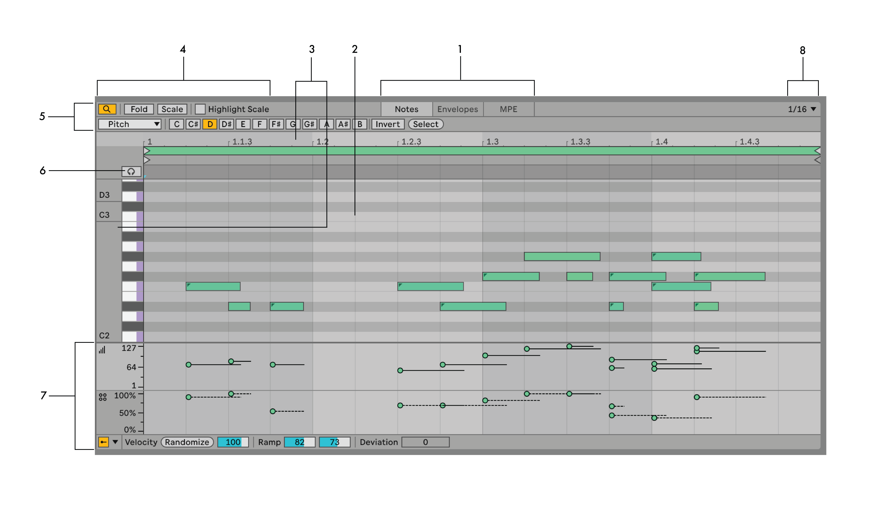
Use the tabs in the Clip View header to access different editor view modes. Make sure that the Notes tab is selected to add and manipulate MIDI notes.
You can add MIDI notes directly in the MIDI Note Editor’s grid.
The MIDI Note Editor has both vertical and horizontal navigation. Along the horizontal axis lies a time ruler, which shows note position along a musical timeline. The vertical axis contains the note ruler, which displays octaves C-2–C8, the subset of pitches used by a loaded tuning system, or a list of drum pads if a Drum Rack is loaded. The vertical axis also includes a representation of a piano keyboard (the piano ruler).
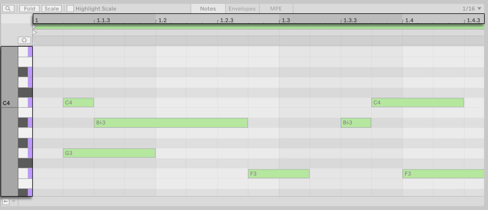
On the left side of the Clip View header, you will find options for folding key tracks and scale highlighting (if a scale is enabled in the MIDI clip), as well as the Find and Select Notes toggle.
If the Find and Select Notes toggle is active, note selection filters appear above the time ruler.
If the Preview switch above the piano ruler is activated, you will hear the sound of the corresponding pitch/drum pad when you click a piano ruler’s key or when you add or move a MIDI note in a key track.
Below the MIDI Note Editor you will find Velocity and Chance Editor lanes and controls which can be used to edit note velocities and probabilities. While only the Velocity Editor is shown by default, you can toggle its visibility, as well as the Chance Editor’s visibility using the triangular Lane Selector drop-down menu. The Show/Hide All Expression Editors toggle to the left of the button allows showing or hiding all enabled lanes at once.
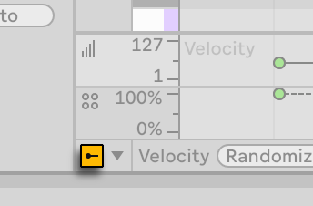
It is also possible to choose whether Velocity or Chance Editor is shown in the visible lane using the Swap Lane option available in the lane header’s context menu.
You can also drag the divider between the MIDI Note Editor and the Velocity and/or Chance Editor lanes to resize or show/hide the lanes and controls. The lanes can be also resized individually via their split lines. It is also possible to resize the lanes using the mousewheel/pinch gesture while holding the Alt (Win) / Option (Mac) key.
- On the right side of the Clip View header, you can see the current grid setting and adjust the grid properties via the chooser.
10.2 Zooming and Navigating in the MIDI Note Editor
There are different ways of interacting with the MIDI Note Editor and its contents:
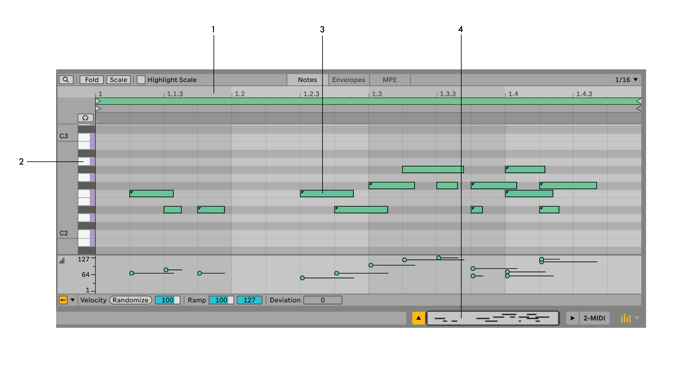
- To smoothly adjust the time zoom level, click and drag vertically in the time ruler. Drag horizontally in the time ruler to scroll from left to right. While scrolling up and down inside the MIDI Note Editor, you can also hold the Ctrl (Win) / Cmd (Mac) modifier to change the time zoom level.
- Scroll up and down in the note ruler to change which octaves are shown. Click and drag horizontally in the note ruler to change the zoom level for key tracks, the MIDI notes they contain and the piano ruler keys. While scrolling up and down inside the MIDI Note Editor, you can also hold the Alt (Win) / Option (Mac) modifier to change the key tracks zoom level.
- Click and drag over one or more notes to select them, or over an area in the MIDI Note Editor to select a range of time. Then, double-click on the note ruler or time ruler to automatically zoom in on your selection. Double-clicking on the note ruler will zoom in on the key tracks, while double-clicking on the time ruler will zoom in on the selected time range. If nothing is selected, double-clicking the note ruler will zoom in on the area from the lowest to the highest note in the clip, while double-clicking the time ruler will zoom out to show the time between the first and last note. Note that if you zoom in to the point when the time selection is no longer displayed on the screen, double-clicking in the note ruler or time ruler will zoom out the MIDI Note Editor so that the entire selection is in view.
- The clip overview in the Clip View Selector in the bottom right corner of the Live window can also be used for navigation. It always shows the complete contents of the selected MIDI clip. The black rectangular outline represents the part of the clip that is currently displayed in the MIDI Note Editor. To scroll, click within the outline and drag left or right; to zoom in and out, drag up and down. You can also adjust the size of the outline by dragging its left or right edges.
You can also use the computer keyboard to quickly navigate within the current selection MIDI Note Editor. Use Page Up/Down keys to scroll vertically one octave up/down. Add the Shift modifier to scroll vertically by just one key track up/down. To zoom in and out around the current time selection, use the + and - keys. Zoom in fully into the current selection with the Z key. Zoom out to view the full clip with the X key. Use Alt (Win) / Option (Mac) and + or - key to zoom in to or out of the MIDI Note Editor.
As you work with MIDI, you may find yourself needing extra screen space. You can click and drag vertically on the window split between the Session or Arrangement View and the Clip View to increase the height of the Clip View and with it, also the size of the MIDI Note Editor.
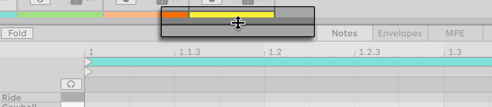
Clip View can be toggled to its maximum height using the CtrlAltE (Win) / CmdOptionE (Mac) keyboard shortcuts or the Expand Clip View entry in the View menu.
10.2.1 Grid Snapping
Most functions in the MIDI Note Editor are subject to grid snapping. This means that when you adjust note positions, the grid acts as if it is magnetic: when you first move a note, it will move freely up to the first grid line you encounter and afterwards, if you continue to drag the note, it will snap to grid lines rather than move freely. You can bypass grid snapping by turning off the grid using the Grid Settings button, by deactivating the Snap to Grid option in the Options menu, or by pressing the Ctrl4 (Win) / Cmd4 (Mac) key combination. Grid snapping can also be bypassed temporarily by pressing the Alt (Win) / Cmd (Mac) modifier while performing editing operations. The opposite is also true: if grid is disabled, it is possible to temporarily enable it using the same modifier.
Notes will also snap to an offset, which is based on the original placement of the note relative to the grid. This is useful for preserving a groove or loose playing style that you do not necessarily want to sound too “quantized.”
10.2.2 Playback Options
The MIDI Note Editor can be set to scroll with playback using the Follow switch in the Control Bar. Follow will pause if you make an edit in the MIDI Note Editor, and will start again when you press the Follow switch again, when you stop and restart playback, or when you stop playback and click in the scrub area in the clip or the Arrangement View.

When Permanent Scrub Areas is enabled in Live’s Display & Input Settings, clicking in the scrub area below the beat-time ruler starts playback from that point, rounded by the global quantization setting. Activating the Options menu’s Chase MIDI Notes command allows MIDI notes to play back even if playback begins after the MIDI note’s start time.
When the Permanent Scrub Areas preference is off, you can still scrub by Shift-clicking anywhere in the scrub area or in the beat-time ruler. Learning about looping and scrubbing clips, and the shortcuts associated with these actions can also be helpful in getting around in the MIDI Note Editor and playing selections quickly and easily.
10.3 Creating a MIDI Clip
MIDI clips are created: - by recording on a MIDI track; - or by capturing MIDI; - or by double-clicking an empty Session slot in a MIDI track; - or by selecting an empty Session slot in a MIDI track and choosing the Create menu’s Insert Empty MIDI Clip(s) command, also accessible through the CtrlShiftM (Win) / CmdShiftM (Mac) keyboard shortcut; - or by double-clicking on the track display of a MIDI track in the Arrangement View; - or, in the Arrangement View, by selecting a timespan in a MIDI track and choosing the Create menu’s Insert Empty MIDI Clip(s) command, also accessible through the CtrlShiftM (Win) / CmdShiftM (Mac) keyboard shortcut.
10.4 Adding MIDI Notes
Notes are added to MIDI clips as you record yourself playing an instrument on an armed track, or when you retrieve the material you played using the Capture MIDI option. You can also manually add notes in the MIDI Note Editor by double-clicking in a chosen location or by drawing notes with the mouse when Draw Mode is active.
10.4.1 Draw Mode
You can switch to Draw Mode by toggling the Control Bar’s Draw Mode button or by pressing the B key. Once enabled, you click and drag inside the MIDI Note Editor to add notes. When Draw Mode is active, clicking on an existing note will delete that note.
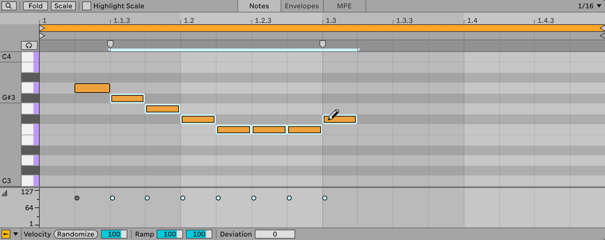
There are two different ways of using Draw Mode: the “Draw Mode with Pitch Lock” option in the Display & Input Settings lets you draw MIDI notes constrained to one single key track (or pitch) at a time, while holding the Alt (Win) / Option (Mac) key allows freehand melodic drawing. When disabled, Draw Mode defaults to freehand melodic drawing, and holding the Alt (Win) / Option (Mac) key enables pitch-locked drawing. In the melodic Draw Mode, when you draw on top of an existing note that note will be erased. In the pitch-locked Draw Mode, drawn notes will be erased when you move the cursor back towards the first added note. When the MIDI Note Editor is focused, the “Draw Mode” entry in the Options and context menus displays the currently selected state of the “Draw Mode with Pitch Lock” preference, as “Draw Mode (Pitch Lock On/Off)”.
Draw Mode is useful for quickly adding in notes or patterns. When Draw Mode is switched off, you can move notes around with the arrow keys or by clicking and dragging, either vertically to transpose them, or horizontally to change their position in time. When Draw Mode is inactive, MIDI notes can be deleted by double-clicking on them.
10.4.2 Previewing Notes
As long as your MIDI track’s device chain contains an instrument, activating the Preview switch in the MIDI Editor allows you to hear notes as you add them or select and move existing notes. If the MIDI track is armed, activating Preview also allows you to step record new notes into the clip. Note that the Preview switch’s on/off state applies to all MIDI tracks in the Live Set.
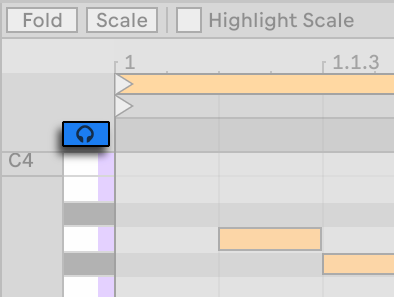
10.5 Editing MIDI Notes
Editing in the MIDI Note Editor is similar to editing in the Arrangement. In both cases, your actions are selection-based: you select something using the mouse or computer keyboard, then execute a command (e.g., Cut, Copy, Paste, Duplicate) on the selection.
10.5.1 Non-Destructive Editing
You can always return your MIDI clip to its previous state by using the Edit menu’s Undo command. Furthermore, if the MIDI clip being edited originated in a MIDI file on your hard drive, none of your editing will alter the original MIDI file, as Live incorporates its contents into your Live Set when importing.
10.5.2 Selecting Notes and Timespan
Clicking in the MIDI Note Editor selects a point in time, represented by a flashing insert marker. You can also move the insert marker to a specific location with the left and right arrow keys, according to the grid settings. Holding the Ctrl (Win) / Option (Mac) key while pressing the left or right arrow key moves the insert marker to the previous or next note boundary. The insert marker can be moved to the beginning or end of a MIDI clip by pressing the Home or End key, respectively.
Clicking and dragging in the MIDI Note Editor selects a timespan. If the dashed line of the selected timespan enclosed any notes, they will automatically also become selected. Press Enter to toggle the selection between the timespan and any notes that are contained within it. Collapse the time or note selection by clicking in the MIDI Note Editor outside of the selection or by pressing the Esc key. You can also collapse time selection by using the arrow keys, which will move the insert marker. Note that if you use the arrow keys with a note selection, the selected notes will be moved on the timeline (when using left and right arrow keys) or transposed (when using up and down arrow keys).
You can also select a timespan using the computer keyboard. Hold down Shift while pressing the arrow keys to select a timespan starting from the insert marker, according to the grid settings. Using this combination with an existing time selection will extend or narrow the selection. Adding the Alt (Win) / Cmd (Mac) key to the combination will extend or narrow the selection irrespective of the grid settings. Holding Alt (Win) / Option (Mac) with Shift while pressing the arrow keys extends or narrows the timespan to the next or previous note boundary.
You can select an individual note by clicking on it. You can also use the keyboard: place the insert marker next to the note you want to select, then press Ctrl (Win) / Option (Mac) together with the up or down arrow key to select a note nearest to the insert marker. Using the combination again will change the selection to the next or previous note in time. To change the selection to the next note in the same key track, hold Ctrl (Win) / Option (Mac) while pressing the left or right arrow keys.
Multiple notes can be selected by clicking and dragging in the MIDI Note Editor. You can add the Shift modifier to add more notes to your current selection. You can also remove a single note from your selection by holding down Shift and clicking on it. Holding Shift and clicking on the piano ruler adds all notes in a single key track to the current selection, or removes them if they were already selected. Click away from the selection in the MIDI Note Editor or press Esc to deselect the notes.
You can also select multiple notes with the keyboard by selecting a note, then pressing CtrlShift (Win) / OptionShift (Mac) in combination with the up or down arrow key. Use the shortcut several times or hold it to continue adding to your existing note selection. The CtrlA (Win) / CmdA (Mac) keyboard shortcut selects all notes, while the Esc key deselects all selected notes.
If selecting multiple notes, but not all of the notes in the clip, it is possible to swap between the currently selected notes and the unselected notes by using the Invert Selection command available from the Edit menu or the MIDI Note Editor’s context menu. Alternatively, CtrlShiftA (Win) / CmdShiftA (Mac) keyboard shortcut can also be used.
10.5.3 Find and Select Notes
You can search for notes that fulfill specific criteria using note selection filters. Notes found in this way are automatically selected, which can be helpful for quickly editing multiple notes of a specific pitch or duration, for example.
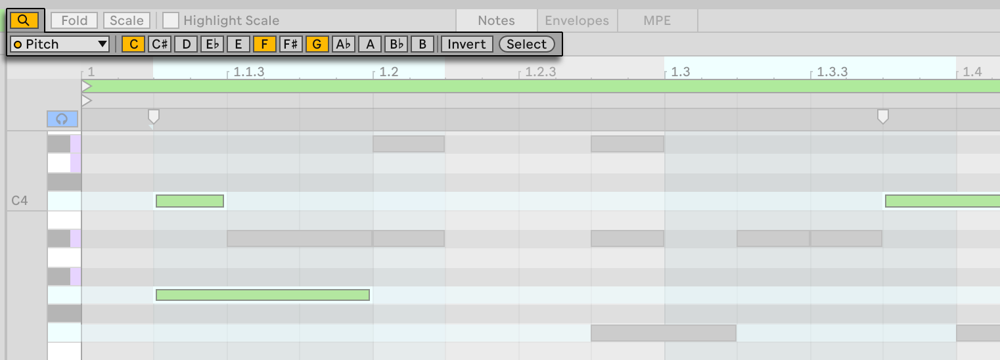
To show the filters, enable the Find and Select Notes toggle in the Clip View header. You can select a filter for finding and selecting notes using the chooser below the toggle. Each filter has a set of dedicated controls, including the option to invert your search by selecting any notes not included in the filter’s search criteria. It is also possible to combine multiple filters to create more precise note selections.
You can filter by eight different note properties:
- Pitch finds and selects the notes which have the pitch or pitches you specified via the Pitch toggles. The filter finds notes in all octaves.
- Time finds and selects notes within a specified time range. Use the Start and Length fields to set the start point and length of the time range in beats, and the Repeat field to set the repetition interval for the selected range in beats.
- Chance finds and selects notes of the specified probability or within the specified probability range, both of which can be set using the Min/Max Probability sliders.
- Condition finds and selects notes that meet one of three conditions: Active, Chance, or Velocity Deviation. When the Active toggle is enabled, all active notes are selected. When the Chance toggle is enabled, all notes with probability values below 100% are selected. When the Velocity Deviation toggle is enabled, all notes with velocity deviation are selected.
- Count finds and selects every nth note or chord in a sequence. The Every slider specifies which nth note to include in the selection. For example, when set to 2, every second note is selected. You can use the Offset slider to adjust which note is considered the first in the selection. The Quantized toggle groups selected notes according to the current grid settings. When active, each group of notes located within a grid step counts as a value of 1 in the Every slider. For example, when the Every slider is set to 3 and the Quantized toggle is active with a fixed grid of 1/16, every third sixteenth note is selected.
- Duration finds and selects notes of the specified length or within the specified duration range, both of which can be set using the Min/Max Duration sliders.
- Scale finds and selects notes that belong to the specified scale. When the filter’s Use Clip Scale toggle is active, notes that fall within the current clip scale are selected. When the toggle is off, you can specify a scale to filter notes with the Scale Root and Scale Name choosers.
- Velocity — finds and selects notes of the specified velocity or within the specified velocity range, both of which can be set using the Min/Max Velocity sliders.
A filter is applied and notes are automatically selected as you adjust the filter’s parameters; a yellow dot also appears next to the filter name in the Filter chooser to indicate that the filter is currently applied. To apply another filter, select it in the Filter chooser and adjust its parameters. To deactivate all filters being applied by Find and Select Notes, click anywhere in the MIDI Note Editor. Note that this deselects all notes.
Each filter includes two general controls: the Invert toggle and the Select button. When you activate the Invert toggle, all notes that do not match the filter’s search criteria are selected. The Select button selects all notes that match the current filter criteria and is useful for reapplying a deactivated filter without adjusting its parameters.
When the Find and Select Notes toggle is active, you can use the mouse to adjust note selections created with the filters. For example, you can press Shift and click on a key in the piano ruler to add all of the notes in that key track to the selection. You can also produce evenly spaced repeated time selections by pressing Shift, and then clicking and dragging left or right in the MIDI Note Editor.
10.5.4 Moving Notes
Notes in the MIDI Note Editor can be moved both horizontally (changing their position in time) and vertically (changing their transposition). They can be moved either by clicking and dragging, or with the arrow keys on your computer keyboard. Notes will react to grid snapping unless the grid is off. To nudge notes without snapping to the grid, hold Alt (Win) / Cmd (Mac) and press the left or right arrow keys.
When notes are selected, you can use the Edit menu to perform editing actions on the notes, such as Copy and Paste. Notes in the clipboard will be pasted starting at the location of the insert marker. You can also use the Ctrl (Win) / Option (Mac) modifier to click and drag copies of notes to a new location. If you click and drag to move notes but then decide that you would like to copy them instead, you can press Ctrl (Win) / Option (Mac) even after you start dragging.
When editing or drawing, you may sometimes place a new note on top of one that already exists. If the new note overlaps with the beginning of the original note, the original note will be overwritten. If the new note overlaps with the end of the original, the original note will be shortened.
10.5.5 Changing Note Length
You can click on a note’s left or right edge and drag it to adjust the note’s length. As with note positions, note lengths can be adjusted freely up to the previous or next grid line but will be quantized when dragging further unless the Alt (Win) / Cmd (Mac) modifier is held down.
You can also change note length using the computer keyboard. Shift plus the left or right arrow keys extends or shortens the duration of selected notes, according to the grid settings. To extend or retract notes without snapping to the grid, also hold Alt (Win) / Cmd (Mac).
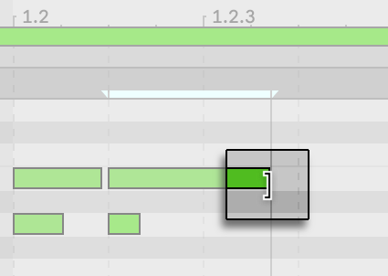
You can extend the duration of all selected notes so that their start and end times match the current time or note selection using the Fit to Time Range option or the CtrlAltJ (Win) / CmdOptionJ (Mac) keyboard shortcut. The option is available as a command in the Edit menu or the MIDI Note Editor’s context menu. You can also select the option from the Duration drop-down menu in the Clip View’s Pitch and Time Utilities panel and apply it with the Set Length button.
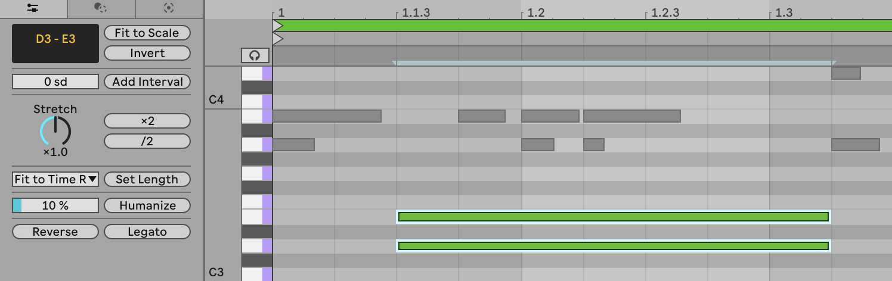
10.5.6 MIDI Note Stretch
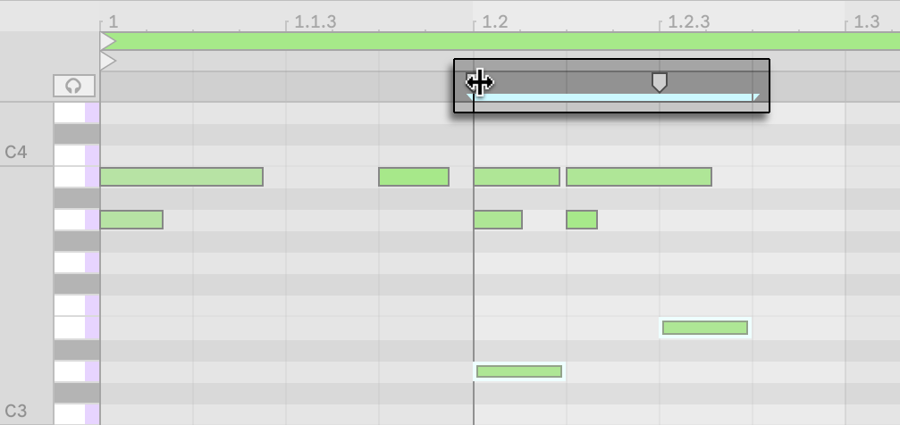
When multiple notes or a range of time are selected, Note Stretch markers will appear below the scrub area, allowing notes to be scaled proportionally in time. The markers are a pair of downward-pointing indicators that snap to the beginning and end of the selection.
By clicking and dragging one of the markers horizontally, the selected notes will be stretched in proportion to their original lengths. Note Stretch markers can be freely moved until reaching the previous or next grid or offset point, after which they will snap to the MIDI Note Editor’s grid lines unless the grid is not shown or the Alt (Win) / Cmd (Mac) modifier is held while dragging.
When the mouse is between the Note Stretch markers, a “pseudo” stretch marker will appear. Dragging this stretches or compresses the material between the fixed markers without affecting the material outside of them. The pseudo stretch marker has the same grid snapping behavior as fixed markers.
One Note Stretch marker can be dragged beyond the boundary of another, which will mirror the order of the stretched notes in relation to their initial sequence.
Adjusting the Note Stretch markers will also adjust the timing of any of the clip’s linked clip envelopes. Unlinked clip envelopes are not affected.
It is also possible to stretch notes using dedicated Stretch controls in the Clip View’s Pitch and Time Utilities panel.
10.5.7 Deactivating Notes
To deactivate, or mute, a note (or notes), select it and press 0, or use the Deactivate Note(s) command in the Edit menu or in the piano ruler’s or the MIDI Note Editor’s context menu. When a note is deactivated it is grayed out and will not be played. Press 0 again to reactivate notes.
10.5.8 Note Operations
There are several additional ways in which you can edit notes in the MIDI Note Editor: dividing notes into two or more parts with the Split and Chop operations respectively, and combining separate notes of the same pitch using the Join operation.
10.5.8.1 Split
The Split operation divides notes into two parts. To use Split, hold the E key, then draw a line across notes to split them. You can also hold E and click and drag horizontally inside a note to simultaneously split and adjust the split position.
Add the Ctrl (Win) / Cmd (Mac) modifier to snap the split position to the current grid.
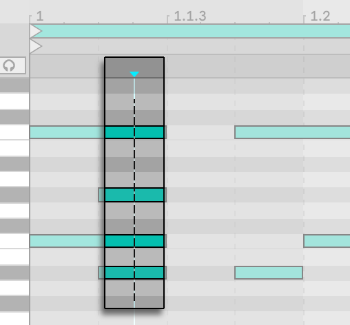
When no notes are selected you can also use the CtrlE (Win) / CmdE (Mac) keyboard shortcut to split all notes intersecting with the insert marker or spanning beyond the time selection. You can also use the Split Note(s) command from the Edit menu or the MIDI Note Editor’s context menu. Note that the command is only available when at least one note intersects with the insert marker or spans beyond the time selection.
10.5.8.2 Chop
The Chop operation can be used to divide notes into several parts based on the grid settings.
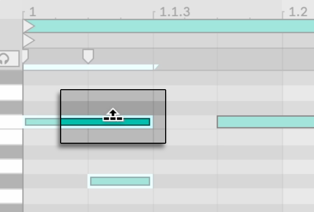
There are different ways of chopping notes depending on whether you use a computer keyboard or a mouse.
Chop notes using the keyboard: - Select notes and press the CtrlE (Win) / CmdE (Mac) key combination to chop the selected notes into parts based on the current grid settings. You can also use the Chop Note(s) on Grid command from the Edit menu or the MIDI Note Editor’s context menu. - Select notes, press the Chop shortcut, then continue holding the Ctrl (Win) / Cmd (Mac) modifier and use the up and down arrow keys to increase or decrease the number of parts into which the notes are chopped. Add the Shift modifier to increase or decrease the number of parts by a power of two.
Chop notes using the mouse: - Select notes, then press the ECtrl (Win) / EOption (Mac) key combination, hover over one of the selected notes and drag up or down to increase or decrease the number of parts into which the notes are chopped. Add the Shift modifier to increase or decrease the number of parts by a power of two.
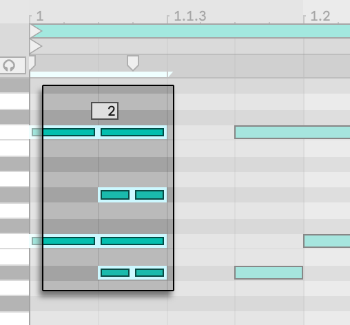
10.5.8.3 Join
The Join operation creates one note from all selected notes of the same pitch, preserving MPE contents and joining the MPE envelopes along with the MIDI notes.
To join notes, select notes in the same key track, then press the CtrlJ (Win) / CmdJ (Mac) keyboard shortcut or use the Join Notes command from the Edit menu or the MIDI Note Editor’s context menu.
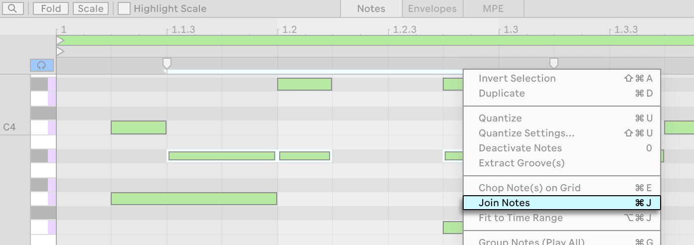
10.5.9 Pitch and Time Utilities
The Pitch and Time Utilities panel contains tools that offer a number of ways to quickly manipulate the notes within a MIDI clip. These utilities affect the selected notes or a time range. If nothing is selected, any changes applied with button controls will affect the whole clip.
10.5.9.1 Transpose
The Transpose slider displays the note pitch range. It can also be used to transpose a note or notes in a time selection. Drag up or down in the slider or type a number into the slider to transpose notes by a chosen number semitones or scale degrees (if a clip scale is active).
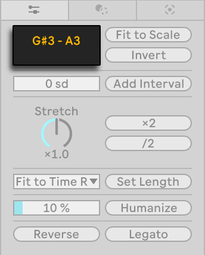
You can also transpose the selected notes directly in the MIDI Note Editor with the up and down arrow keys. To transpose by octaves, hold down Shift while pressing the up or down arrow keys.
10.5.9.2 Fit to Scale
The Fit to Scale button adjusts pitches of the notes within the clip or the selection so that they fall within the scale set for the clip. Notes are adjusted to the closest scale degree of a given scale or, in case of an equal distance, to the lower scale degree. If a scale is not active for the clip, the button will be greyed out.
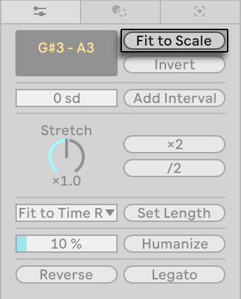
10.5.9.3 Invert
Invert is a pitch operation where the position of the highest note is swapped with the position of the lowest note, with other notes being flipped vertically, resulting in the note selection being turned “upside-down”.
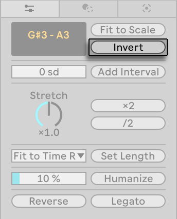
If a scale is active in the clip, Invert will calculate the inverse position of notes relative to the current scale degrees.
Note: Invert is not to be confused with the Invert Selection option described in the Selecting Notes and Timespan section earlier in this chapter: the former is a pitch change performed on a note selection, whereas the latter changes what is selected.
10.5.9.4 Intervals
You can use the Interval Size slider and the Add Interval button to set the number of semitones or scale degrees (if a clip scale is active) by which the pitches of new notes will be shifted in relation to the pitches of the original note selection. This is useful for quickly creating chords.
If there is an existing note selection, adjusting the value in the Interval Size slider will result in new notes being immediately added and selected in the MIDI Note Editor. When no notes are selected, the slider merely sets the interval size which then needs to be applied with the Add Interval button. If the button is then used with no note selection, new notes will be added at the specified interval for all of the existing notes in the clip.
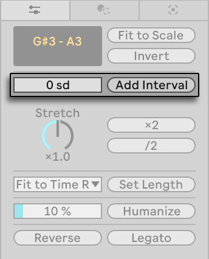
10.5.9.5 Stretch
It is possible to quickly adjust the note length of selected notes with the three note stretching options in the Pitch and Time Utilities panel: the Stretch Factor control and the Double (×2) and Halve (/2) buttons.
Stretch sets the factor by which the note length is changed. The ×2 and /2 buttons to the right of the Stretch control respectively extend or shorten the note duration, time selection, or loop region by a factor of 2.
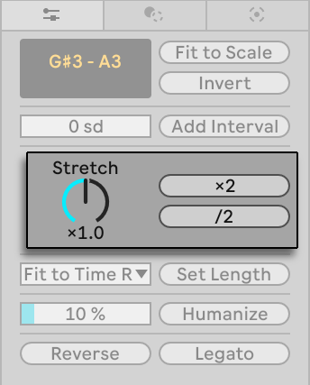
Note that the Stretch control has no effect on the length of the loop region.
10.5.9.6 Note Duration
You can set the same note duration, or length, for all selected notes. It is possible to fit note lengths within time range, use the current grid setting as the basis for note duration, or select a specific length from the options available in the Duration drop-down menu.
Once you select the desired note length, apply it to the selected notes with the Set Length button. If no notes are selected, pressing the button will apply the specified note length to all notes in the clip.
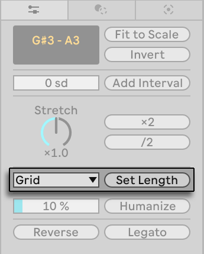
10.5.9.7 Humanize
Humanize adds a variation to note starts times, removing any potential mechanical feel from the composition. The variation percentage is set using the Humanize Amount slider, up to a quarter of a grid division before or after the original note position, and can be applied with the Humanize button.
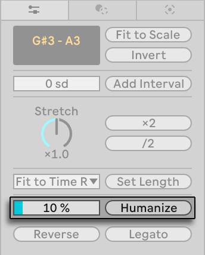
10.5.9.8 Reverse
The Reverse button rearranges the selection so that the position of the last note is swapped with the position of the first note and the positions of the notes in between are flipped horizontally. When no notes are selected, the entire clip is reversed.
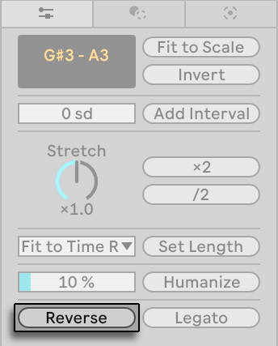
10.5.9.9 Legato
Pressing the Legato button results in the duration of each selected note being extended (or shortened), so that it reaches the start of the next note. The last note gets extended to the end of the loop.
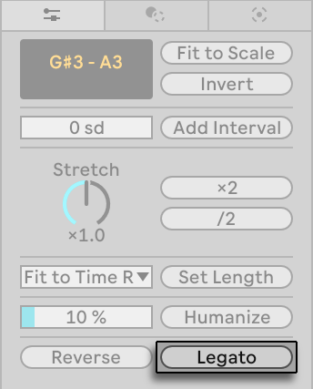
You can also use the Span MIDI Tool to apply legato note lengths.
10.5.10 MIDI Tools
The MIDI Tools contained in the Transform and Generate panels offer additional ways of editing MIDI notes. Existing notes can be altered through, amongst others, articulation, interpolation, or ornamentation, or completely new note patterns can be instantly generated according to specified parameters.
You can find out more about all the available options for transforming and generating notes in a dedicated MIDI Tools chapter.
10.5.11 Quantizing Notes
There are four ways of quantizing MIDI notes in Live:
- Quantizing notes as you record them.
- Quantizing notes by moving them so that they snap to the visible grid lines.
- Quantizing notes by using the Quantize MIDI Tool in Clip View’s Transform panel for more granular control of note quantization. The transformation allows you to set a specific value at which notes will be quantized (including the possibility of note starts and ends being quantized). You can also quantize notes without giving them that “quantized” feel using the Amount control, which will move notes only by a percentage of the set quantization value.
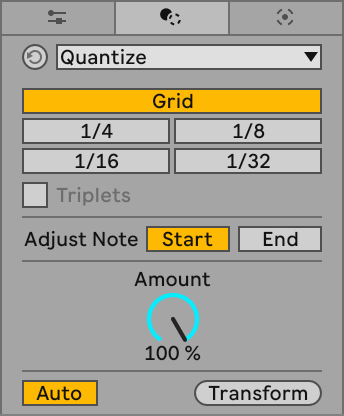
- Quantizing by selecting a note or notes and choosing the Quantize command from the Edit menu, or using the CtrlU (Win) / CmdU (Mac) keyboard shortcut. This option will use the quantization settings as specified in the Quantize MIDI Tool described above. These settings can also be opened using the CtrlShiftU (Win) / CmdShiftU (Mac) keyboard shortcut.
10.5.12 Editing Velocities
Note velocity data is recorded when a MIDI note is played as a result of pressing a key or a pad on a controller and can be understood as a note’s loudness. In the MIDI Note Editor, note velocity is visually indicated by the amount of saturation in the note’s color — less saturated notes play softly, while more saturated notes play louder. You can use the Velocity Editor to adjust the velocity values for the notes in a clip.
To change velocity for a MIDI note, click and drag on the associated marker in the Velocity Editor. Velocity values will be shown numerically in the Velocity Editor’s lane header. To help you locate the velocity marker belonging to a MIDI note that may be stacked vertically with others, Live highlights the velocity marker for whichever note your mouse is hovering over.
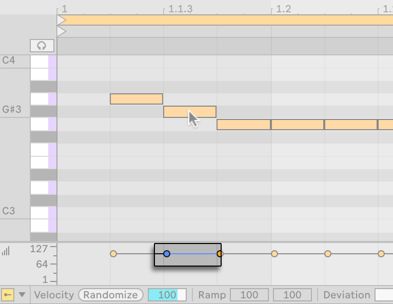
You can select multiple velocity markers to change by clicking with the Shift modifier held down. To set a group of notes so that they all have the same velocity, select their markers in the Velocity Editor, drag them up or down to either maximum or minimum velocity, and then adjust velocity to the desired value.
To change the velocity of notes without opening the Velocity Editor, click any selected note and drag vertically while pressing the Alt (Win) / Cmd (Mac) modifier.
Velocity values can also be entered manually by first selecting the velocity marker, then typing the numerical value on the computer keyboard and hitting the Enter key.
You can use the up or down arrow keys with Ctrl (Win) / Cmd (Mac) held down to increment the values of selected velocity markers by +/-10. Holding the Shift key at the same time allows fine-tuning the values of selected velocity markers.
Apart from manually adjusting velocity values for notes, you can also set a velocity range or randomize the note velocity values using Velocity Controls available below the Editor lanes when the Velocity Editor is selected.
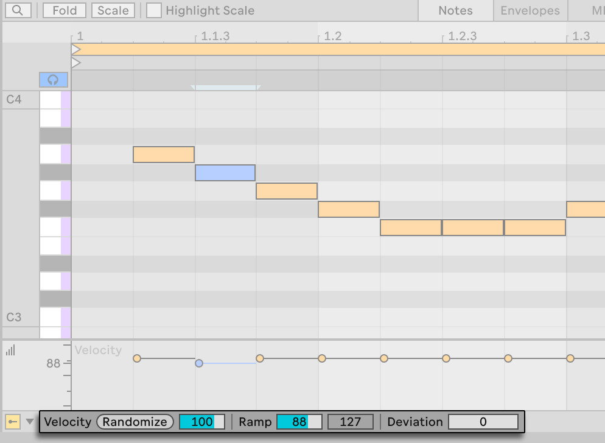
Velocity values for selected notes (or notes with selected markers) can be randomized by clicking on the Randomize button. If no notes or markers are selected, values for all notes will be randomized.
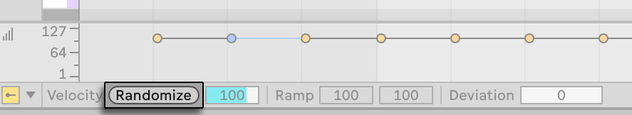
The Randomization Amount slider to the right of the Randomize button allows specifying a range of randomized velocity values. Velocities will be randomly increased or decreased by a value between zero and the number shown in the slider. The slider’s value can also be typed as a number with the keyboard, and randomization is then triggered when the new value is validated using the Enter key.
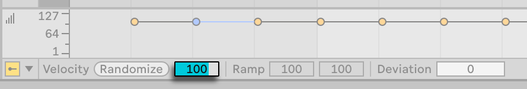
The Ramp sliders can be used to create a velocity ramp for multiple notes. The Ramp Start Value slider is used to set the velocity value for the first note in the selection, whereas the Ramp End Value slider sets the value for the last note. The other notes in the selection are distributed evenly within the range set by the Ramp sliders.
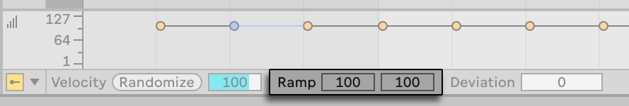
The Velocity Deviation slider can be used to set a range for each note’s velocity. Velocity values are then chosen randomly from within the specified range each time a note is played. Positive and negative values can be set, which increase or decrease velocity, respectively. For example, if a velocity range of +20 is set for a selected note with a velocity value of 60, a random value between 60 and 80 will be chosen each time the note is played.
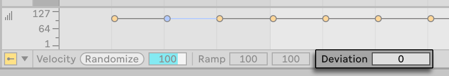
The velocity range is indicated by the shaded area that appears above or below the velocity markers and with a dot inside of the velocity markers. Double-clicking the velocity marker which has a velocity range set will reset the range to 0.
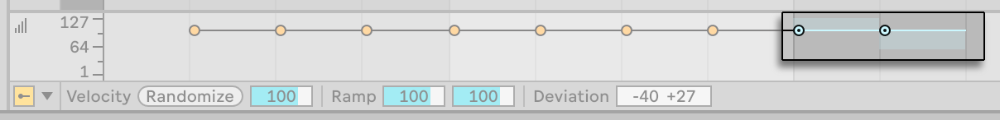
If multiple notes are selected, the range in the Velocity Deviation slider will be adjusted accordingly to the existing velocity values. For example, when increasing the velocity range, if one note’s velocity value is set to 50 and another note’s to 25, the velocity range of the first note can be +77 at most, whereas the range of the second note can be +102. Both values will then be displayed in the slider to reflect this.
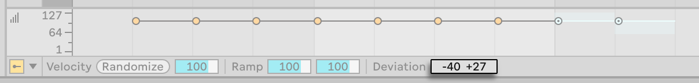
You can also set the velocity range by holding Ctrl (Win) / Cmd (Mac) and dragging up or down from a velocity marker. This applies both to individual notes and a note selection.
10.5.12.1 Drawing Velocities
Draw Mode allows drawing inside the Velocity Editor as a way of setting velocity values instead of adjusting them manually. You can enable Draw Mode by toggling the Control Bar’s Draw Mode button or by pressing the B key.
Drawing velocity affects notes located within a given grid division will be affected. If the notes are selected, only those notes will be affected, even if there are other notes within the grid division. If no notes are selected, all notes will be affected. The exact notes that will be affected are highlighted in blue when hovering over the Velocity Editor.
To draw markers individually (as you would want to with a crescendo, for instance) deactivate grid snapping with the Ctrl4 (Win) / Cmd4 (Mac) shortcut, or simply hold down the Alt (Win) / Cmd (Mac) modifier. To draw markers along a straight line hold down the Alt (Win) / Option (Mac) and drag the cursor. Add Shift to make the line horizontal.
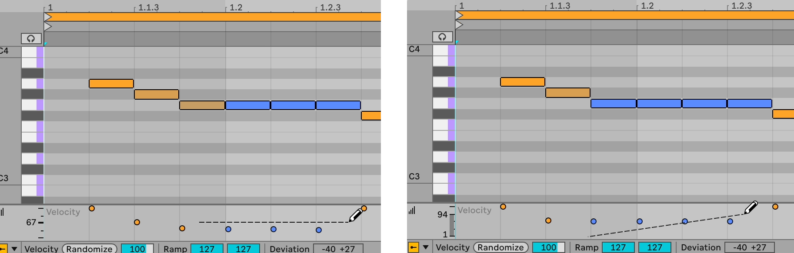
To draw a velocity ramp with notes that are all in the same key track, click a key in the piano ruler to select all notes within the desired key track and draw the ramp into the Velocity Editor.
10.5.12.2 Note Off Velocity
While the Velocity Editor allows you to adjust Note On velocities, you can also open the Release Velocity Editor to show Note Off velocities.
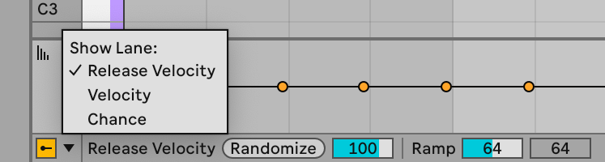
Note Off (or “release”) velocity is a somewhat esoteric parameter. If you think of velocity as the speed of pressing a key, you can look at release velocity as the speed at which the pressed-down key is released. Release velocity is only supported by certain devices. Live’s Sampler instrument, for example, provides Note Off velocity as a controller for a variety of parameters.
10.5.13 Editing Probabilities
Note probability determines the likelihood of a MIDI note being triggered during clip playback. You can set probability for notes using the Chance Editor.
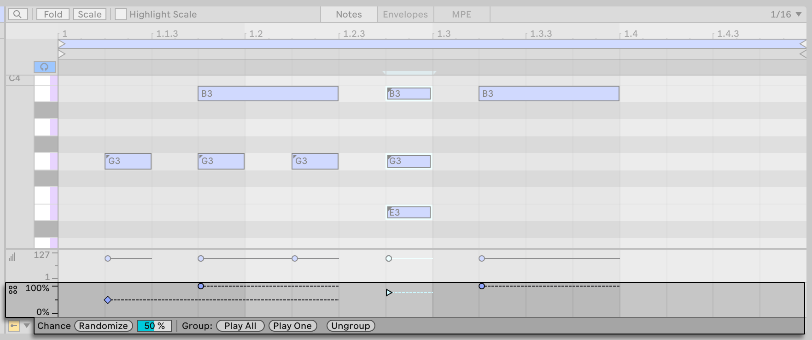
Note that the Chance Editor lane is hidden by default and can be shown by clicking on the triangular Lane Selector drop-down menu to the right of the Show/Hide All Expression Editors toggle on the left of the Clip Content Toolbar.
To change a MIDI note’s probability value between 0-100%, click and drag on the note’s probability marker in the Chance Editor. To help you locate the probability marker belonging to a MIDI note that may be stacked vertically with others, Live highlights the probability marker for whichever note your mouse is hovering over. As you drag the marker, the current probability value will be displayed in the Chance Editor’s lane as well as the Status Bar. If multiple notes with different probability values are selected, a range of probability values will be shown.
Note probability values can also be entered manually with a computer keyboard by first selecting a probability marker, then typing the numerical value on the keyboard and pressing the Enter key. Using the up or down arrow keys on the keyboard changes the values of selected probability markers by +/-10%. Holding the Shift key while using the arrow keys allows fine-tuning the values of the selected probability markers.
A small triangle is displayed in the upper-left corner of notes with probability values less than 100%. The triangle is only visible if the key track height is expanded enough; otherwise, it will be hidden. To increase the key track height, click and drag right in the note ruler and the MIDI Note Editor will zoom in.
It is possible to randomize note probability values within a specified range, relative to the initial note probability value. This range is set using the Randomization Amount slider in Clip Content Toolbar and can help in creating variations on each loop for added interest or in humanizing the piece.
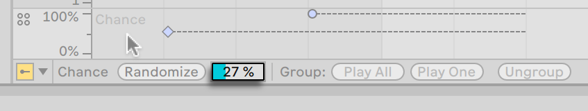
Note probability will be randomly changed from the original value, with the new value falling on either side of the initial probability, within the range set in the Randomization Amount slider. For example, if the original probability value was 50% and the Randomization Amount was set to 25%, the randomized probability values will range from 25-75%. When notes are selected, adjusting the percentage in the slider will immediately randomize probability values for those notes. You can also type in a value to set the randomization range using the keyboard, and apply the new range using the Enter key. If no notes are selected, changing the value in the slider will have no effect until the Enter key is pressed or the Randomize button is used, at which point the randomization will be applied to all note probabilities.
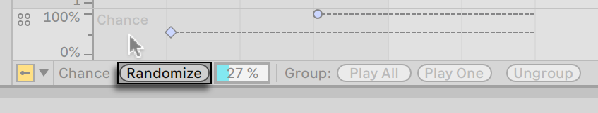
10.5.13.1 Probability Groups
In addition to setting a probability value for individual notes, you can also assign a single probability value to a group of notes, so that either all notes in the group play according to the assigned value or just one note out of the group plays at a time. These two probability group types are available:
Play All — all notes are played with the probability value set with a probability marker. Play One — only one note in the group is played at a time, according to the set probability. The note which plays is selected at random.
To create a note probability group, select the notes you would like to be a part of the group and press either the Play All or Play One button in the Clip Content Toolbar, depending on the type of probability group you wish to create.
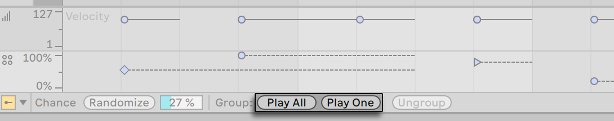
Once grouped, a single probability marker will be displayed for the notes in the Chance Editor: the marker will have a diamond handle for the Play All group type or a triangle handle for the Play One type. Right-clicking on a group probability marker allows you to change the probability group type. You can also change the group type using the Play All or Play One buttons in the Clip Content Toolbar.
Apart from the dedicated buttons, you can create note probability groups in a few other ways: - Use the context menu options Group Notes (Play All) or Group Notes (Play One) in the MIDI Note Editor. - Use the Edit menu command Group Notes (Play All) or Group Notes (Play One). - Use the keyboard shortcut CtrlG (Win) / CmdG (Mac). The shortcut will create a group of the same type as the group last created through either the dedicated buttons or the context menu.
Hovering over a note that belongs to a group highlights all the notes within the group. When selected notes belong to a probability group, the group’s type will be displayed in the Status Bar. If all notes belong to the same group, the type is listed explicitly, otherwise it is marked with an asterisk.
The small triangle displayed in the upper-left corner of notes with probability values less than 100% is always displayed when a note belongs to a probability group, even if the probability of the group is set to 100%.
To remove a note from a probability group, select it, then use the Ungroup button in the Clip Content Toolbar. Alternatively, adding a note to a different group will automatically remove it from its original group. In order to remove a probability group altogether, select all the notes in the group, then press Ungroup.
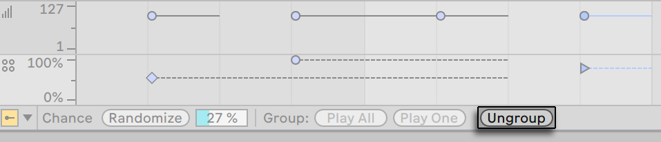
You can also use the Edit menu command Ungroup Notes, the shortcut CtrlShiftG (Win) / CmdShiftG (Mac), or right-click on a grouped note marker and select the Ungroup Notes option. After notes are ungrouped, individual probability markers will be displayed for each note in the Chance Editor once again.
10.6 Folding and Scales
The MIDI Note Editor includes folding options, which can be used to hide selected rows, or key tracks, in the editor. These options apply to all MIDI clips in the Set, meaning that the available rows in each clip in your Set will differ, depending on which notes exist in that clip.
The first folding option is Fold to Notes, which can be used to immediately hide all key tracks that do not contain MIDI notes. This is very useful when working with percussion kits, for example, which are oftentimes mapped out along a keyboard in sections corresponding to percussion type (e.g., snares grouped together two octaves down from hi-hat cymbals). When editing a MIDI file created by such a mapping, sometimes only one or two of each type of percussion sound is used, and it becomes unnecessary to view the entire keyboard range.
The Fold to Notes option can be activated by pressing the Fold button located in the Clip View header, by pressing the F shortcut key while the MIDI Note Editor is in focus, or via the View menu entry.
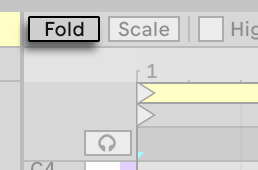
If Fold to Notes is activated on a track containing a Drum Rack, only rows containing MIDI notes are displayed. If the option is inactive, the key tracks for drum pads that contain devices are shown in the MIDI Note Editor.
If Scale Mode is enabled for a clip, notes belonging to the selected scale are highlighted in the piano ruler. This is useful for seeing at a glance which notes belong to that scale, allowing you to easily write melodies within the chosen scale. Scale Mode can be toggled with a dedicated button in the Main Clip Properties panel in the Clip View or in the Control Bar. To the right of the Scale Mode button, Root Note and Scale Name choosers allow setting a root note and scale for the selected clip(s).
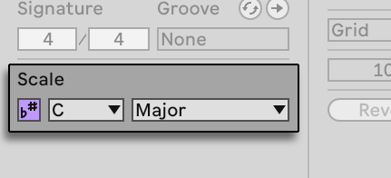
By default, key tracks belonging to the selected scale are indicated through a highlight on the piano ruler’s keys. If you want an even more noticeable indicator of which key tracks belong to the current scale, you can use the Highlight Scales option. When active, key tracks within the selected scale are highlighted in the MIDI Note Editor alongside the highlighted piano ruler’s keys, while the root note is indicated by a prominent highlight in the piano ruler. Scale highlighting can be toggled by pressing the Highlight Scale button in the Clip View header, by pressing the K shortcut key while the MIDI Note Editor is in focus, or via the Highlight Scales context menu and Options menu entry. Scale highlighting is applied globally.
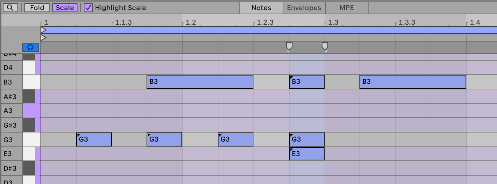
When multiple clips with different scale settings are selected, any foreground clip will influence the scale settings for newly created clips. If Scale Mode is disabled, newly-created MIDI clips will inherit the most recently selected clip’s scale setting, but the scale will remain inactive.
You can set a preference for spelling a clip’s notes with flats, sharps, or both, via the piano ruler’s context menu. When Scale Mode is not enabled, this setting applies to all notes, but when Scale Mode is enabled, this preference only applies to notes which are outside of the chosen scale; notes within the scale will maintain their proper accidentals. An additional “Auto” option automatically selects flats or sharps based on the position of the root note in the circle of fifths. Note that it is also possible to display the notes as MIDI note numbers instead of pitches.
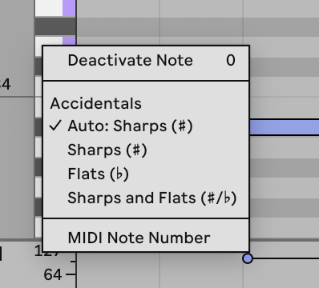
When a scale is active in a clip, another folding option becomes available: Fold to Scale, toggled by pressing the Scale button in the Clip View header, by pressing the G shortcut key while the MIDI Note Editor is in focus, or via the View menu entry. Activating the Fold to Scale option will immediately hide all key tracks that do not belong to the scale specified for the clip. Note that if you have already added notes on the key tracks that don’t belong to the active scale, those key tracks will still be displayed, even when the Fold to Scale option is active.
This option is useful as a melodic composition reference for selecting complimentary notes. It can be especially helpful if you are not confident in your knowledge of music theory and want to compose melodies without constantly adjusting note placement until the sound “feels right.”
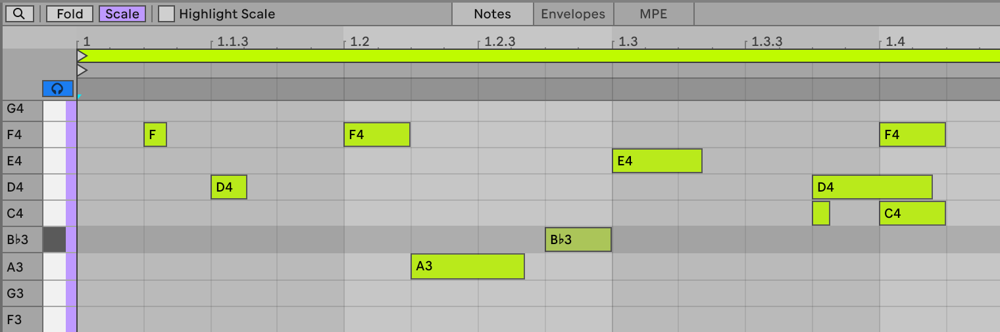
10.7 Editing MIDI Clips
Apart from editing individual notes in a clip, there are also operations that apply to the entire MIDI clip. Many of these are covered in the Clip View chapter, but there are additional ways of working with MIDI clips described below.
10.7.1 Cropping MIDI Clips
MIDI data that is outside of the loop brace can be deleted using the Crop Clip command. If there is a time selection, the MIDI data outside of the selection can be deleted with the Crop to Time Selection command instead. Simply right-click on a MIDI clip in the Session or Arrangement View and select the relevant option, or use the CtrlShiftJ (Win) / CmdShiftJ (Mac) keyboard shortcut.
Note that unlike cropping samples in audio clips, cropping a MIDI clip does not create a new file on disk.
10.7.2 The …Time Commands in the MIDI Note Editor
The standard clipboard commands like Cut, Copy and Paste only affect the currently selected notes (or the notes within a time selection). But, as in Arrangement editing, there are “… Time” commands that act upon the entire MIDI clip by inserting and deleting time.
Note that these operations do not change the clip start/end position or the loop brace settings.
- Duplicate Time places a copy of the selected timespan into the clip, along with any contained notes.
- Delete Time deletes a selection of time from the MIDI clip, thereby moving any notes on either side of the deleted area closer together in the timeline.
- Insert Time inserts as much empty time as is currently selected into the clip, before the selection.
10.7.3 Looping
When editing MIDI, you might find that you want to loop a specific portion of a clip in order to make fine adjustments while listening to the section repeatedly. You can use the loop markers for this.
You can select a region for looping by moving the position of the loop start and end markers. Note that it is possible to adjust the looping region during playback.
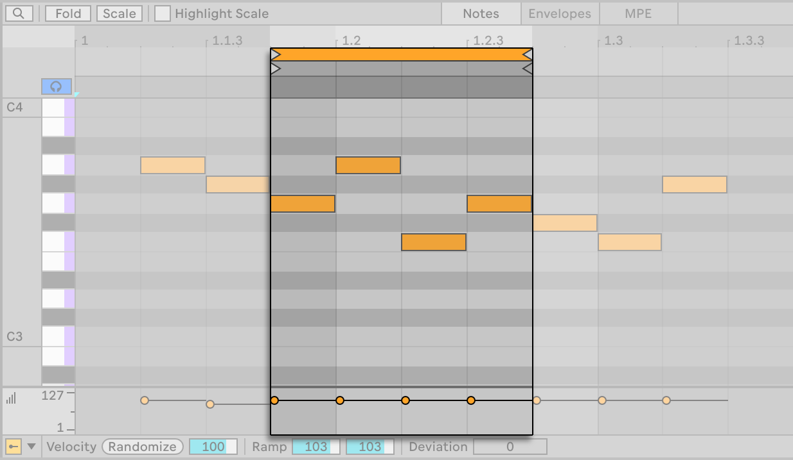
Selecting the loop brace in a MIDI clip and pressing CtrlD (Win) / CmdD (Mac) doubles the length of the loop brace, duplicates the notes contained within the original loop brace, and zooms out as necessary to show the entire loop. Any notes to the right of the loop will be moved, so that they maintain their position relative to the end of the loop.
MIDI clips are looped by default. You can turn off looping for an individual clip using the Clip Loop toggle in the Clip View’s Main Clip Properties panel. When looping is switched off, the loop brace is grayed out.
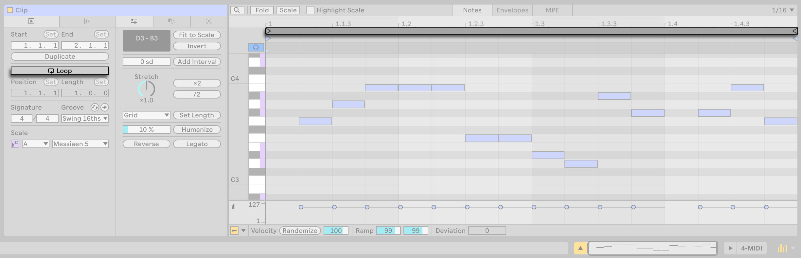
10.8 Multi-Clip Editing
In the MIDI Note Editor, you can view and access notes in multiple MIDI clips at the same time. This helps you to see melodic and rhythmic relationships between different clips when creating and refining musical ideas, and allows you to edit material across separate tracks and scenes more quickly. In addition to editing notes across multiple clips, you can also modify various parameters for the selected clips.
While multi-clip editing is useful for looking at clips across different tracks, it can also come in handy when you need to compare and edit multiple clips within the same track. For example, you can create evolving pattern progressions by adding notes to a clip, then making a variation to the clip in the following scene and so on, while maintaining an overview of the other clips in the track.
When multiple MIDI clips are selected:
- The notes from these clips will be shown together in the MIDI Note Editor. You can select and edit notes from multiple selected clips at the same time, or use Focus Mode to edit notes in a single clip while notes from other clips are still in view.
- Loop bars will appear above the MIDI Note Editor. Each loop bar represents a different clip in the current selection, and the colors of the loop bars match the color of the clip. Clicking on a clip’s note or loop bar switches to that clip for editing.
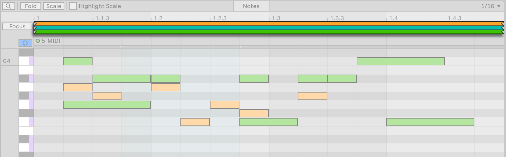
- You can adjust the loop length for any single clip by clicking and dragging its loop bar marker. You can also select and edit loop bars from any of the selected clips simultaneously, by clicking or dragging their loop markers while pressing the Ctrl (Win) / Cmd (Mac) key. Using the Shift key allows you to select contiguous loop bars. Note: With Focus Mode enabled, it is not possible to select more than one loop bar at a time, and any existing multi-selection is ignored.
- You can duplicate selected loop bars using the context menu option or the CtrlD (Win) / CmdD (Mac) keyboard shortcut.
- The title bar will show the name of the clip selected for editing. This can be particularly useful for identifying different clips with the same color. Note: If a clip has no name, the title bar will display the name of the track containing the clip instead.
- Certain controls in the Clip View panels are editable for all selected clips. These controls include loop, time signature, groove, and scale settings.
- Fold to Notes and Fold to Scale can be used for all selected clips.
- Actions in Velocity or Chance Editor are only ever applied to a single clip at a time. The velocity and probability markers are displayed for the foreground clip, not for all clips. It is not possible to make changes to velocity or probability for all notes in all selected clips.
- You can resize the height of the loop bars by clicking and dragging vertically directly above the multi-clip title bar’s scrub area.
Note that multi-clip editing works differently depending on whether you are working in the Session View or in the Arrangement View.
10.8.1 Focus Mode
Focus Mode allows you to select a single clip to edit while viewing multiple clips. Focus Mode can be toggled via the Focus button or the N keyboard shortcut. Holding N while editing with the mouse toggles Focus Mode momentarily. Multi-clip editing functions differently depending on whether Focus Mode is enabled or not.
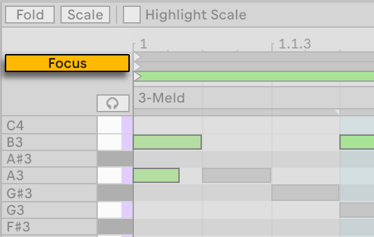
When Focus Mode is enabled:
- The active clip’s notes will be shown in that clip’s color, while the inactive clips’ notes will be shown in gray.
- The active clip’s loop bar will be shown in the clip color, while the inactive ones will be shown in gray. Whenever clicked, the active clip’s loop bar will be shown in black. You can click away from the loop bar anyway on the active clip’s timeline to return the clip’s loop bar to the clip color while maintaining the clip in focus.
- The name of the active clip is displayed below the loop bars.
- Hovering the mouse over an inactive clip’s loop bar will reveal that clip’s color and notes, helping you to choose a different clip in the current selection to edit. Clicking on a clip’s note or loop bar switches to that clip for editing.
- Any clip and note editing operations available in the Clip View in the MIDI Note Editor are only available for editing the active clip.
- The scale displayed in the Clip View is the scale of the currently selected clip. This scale affects the Fold to Scale option.
- Enabling Fold to Notes will fold all key tracks outside all the selected clips.
When Focus Mode is disabled:
- All notes are displayed with their clip’s color, as all notes are active.
- A clip’s loop bar will turn black when clicking on it, which then allows you to randomize Velocity or Chance for notes within that clip by first-clicking. The non-selected loop brace will display the color of its clip.
- The root note and scale name for the currently selected clips are only displayed in the Clip View if they are the same across all clips. Otherwise, an asterisk is shown where different root notes or scale names are chosen.
- Any clip and note editing operations available in the Clip View in the MIDI Note Editor are available for all selected clips.
- Notes can be cut or copied from multiple clips and inserted into the same set of clips, as long as the clip selection/foreground clip has not changed, or into a different clip once that new clip has been selected.
- Note editing functions (e.g. copy, cut, paste, delete) can be used when working with note selections across clips and loop boundaries.
- Time in the MIDI Note Editor can be selected across loop and clip boundaries.
10.8.2 Multi-Clip Editing in the Session View
In the Session View, you can select and view up to eight MIDI clips at the same time, all of which must be looped. In the MIDI Note Editor, loop bars are ordered vertically (first by track, and then by scene).
If multiple clips of different lengths are selected, the MIDI Note Editor will show as many loop iterations as necessary for the clips to realign. The part of the timeline that falls outside of a clip’s loop area will be marked in a darker version of the clip color. When you hover over a clip, loop start and end will be represented by black vertical lines in the MIDI Note Editor. If a clip’s start marker is set before the loop start, the loop markers for the clip will be shifted accordingly to represent this.
10.8.3 Multi-Clip Editing in the Arrangement View
In the Arrangement View, it is possible to select and view MIDI clips from up to eight tracks, across a selection of time. In the MIDI Note Editor, loop bars are ordered vertically by track and horizontally by time.
Notes can be drawn continually across clip boundaries, except in Focus Mode.
The MIDI Note Editor will not show silence before or after the selection of clips – instead, it will fit its display range to show the beginning of the first clip up to the end of the last clip in the selection. If the selection contains looped and unlooped clips, the Loop button in the Clip View will appear half colored.